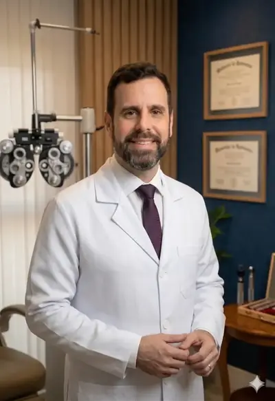

Avaliação para cirurgia de catarata
com preços reduzidos (vagas limitadas)
Pacote cirúrgico com exames e lente importada. Especialistas renomados, tecnologia de ponta e parcelamento em até 10x sem juros.
Pacotes completos com tudo incluso. Sem surpresas na hora da cirurgia.
* Preços estimados por olho. O valor exato depende da avaliação pré-operatória e do tipo de lente indicado. Solicite um orçamento personalizado.
Um processo simples, seguro e acolhedor do início ao fim.
Avaliação completa com nossos especialistas para entender sua condição e indicar o melhor tratamento.
Exames biométricos e pré-operatórios completos para garantir precisão na escolha da lente ideal.
Procedimento rápido (15–20 min) com anestesia local e sedação. Sem internação — você vai para casa no mesmo dia.
Já no dia seguinte a maioria dos pacientes nota melhora significativa. Retorno incluído no pacote.
Profissionais com mais de 10 anos de experiência e presença em grandes veículos de mídia nacional.

Catarata e Retina Cirúrgica — CRM-SP 139.300
Fundador da Drudi e Almeida, especialista em catarata e retina com mais de uma década de experiência. Preceptor de Retina e Catarata na Residência Médica do IAMSPE.
Condecorado "Amigo da Marinha" (SOAMAR Brasil) pelo projeto humanitário que leva cirurgias gratuitas a comunidades ribeirinhas da Amazônia.

Córnea e Segmento Anterior — CRM-SP 148.173 | RQE 59.216
Cofundadora da Drudi e Almeida, especialista em Córnea pela EPM/UNIFESP. Fellowship em Córnea e Doenças Externas. Referência em adaptação de lentes de contato especiais.
Presença frequente em grandes veículos como Programa Você Bonita (TV Gazeta), CNN Brasil e Programa Interioriza, democratizando informação sobre saúde ocular.
"Fiz minha cirurgia de catarata com o Dr. Fernando e o resultado superou todas as expectativas. Equipe muito profissional e acolhedora. Recomendo de olhos fechados!"
"Minha mãe de 78 anos ficou com medo, mas a equipe explicou cada etapa com paciência. No dia seguinte ela já enxergava perfeitamente. Atendimento humanizado de verdade."
"Os equipamentos são de última geração. O Dr. Fernando é muito competente e atencioso, sempre explica tudo com calma. Melhor clínica de olhos que já fui."


Tire suas dúvidas antes de entrar em contato. Se não encontrar o que procura, fale com nossa equipe.
Não. A cirurgia é realizada com anestesia local (colirió anestésico), sem necessidade de injetável ou anesésico geral. O procedimento dura cerca de 15 a 20 minutos por olho e o paciente fica acordado, mas sem sentir dor. Pode haver uma leve pressão durante a cirurgia, mas não é doloroso.
A maioria dos pacientes já enxerga com muito mais nitidez no dia seguinte à cirurgia. A recuperação completa leva de 4 a 6 semanas, período em que o paciente usa coliriós e evita esforços intensos. As atividades cotidianas normais (ler, assistir TV, caminhar) podem ser retomadas em poucos dias.
Sim, é obrigatório ter um acompanhante adulto no dia da cirurgia para levar o paciente de volta para casa. O olho operado fica com curativo e a visão pode estar um pouco embaçada imediatamente após o procedimento. O acompanhante não precisa ficar dentro da clínica durante a cirurgia.
A maioria dos planos de saúde cobre a cirurgia de catarata quando há indicação médica. Aceitamos Bradesco Saúde, Amil, Unimed, Prevent Senior, Mediservice, Pró-PM, Ameplam e outros. A cobertura pode variar conforme o tipo de lente (monofocal geralmente é coberta; multifocal pode ter coparticipação). Consulte pelo WhatsApp para verificar seu plano.
A lente monofocal corrige a visão para uma distância (geralmente longe), sendo necessário óculos para perto. Já a lente multifocal permite enxergar bem de perto, intermédio e longe, reduzindo ou eliminando a necessidade de óculos. A indicação depende do estilo de vida do paciente e da avaliação pré-operatória.
Não. A catarata é a opacificação do cristalino natural do olho, que é removido e substituído por uma lente artificial durante a cirurgia. Como a lente artificial não envelhece, a catarata não volta. Em alguns casos pode ocorrer uma opacificação da cápsula posterior (chamada de “catarata secundária”), tratada com um laser simples e indolor em poucos minutos.
Ainda tem dúvidas? Nossa equipe responde em até 2 horas.
Perguntar pelo WhatsAppFale com nossa equipe pelo WhatsApp e receba o preço da cirurgia, informações sobre convênios e disponibilidade — sem compromisso.
Receber Preço no WhatsApp🛡️ Sem compromisso · Resposta em até 2h · Atendimento humanizado